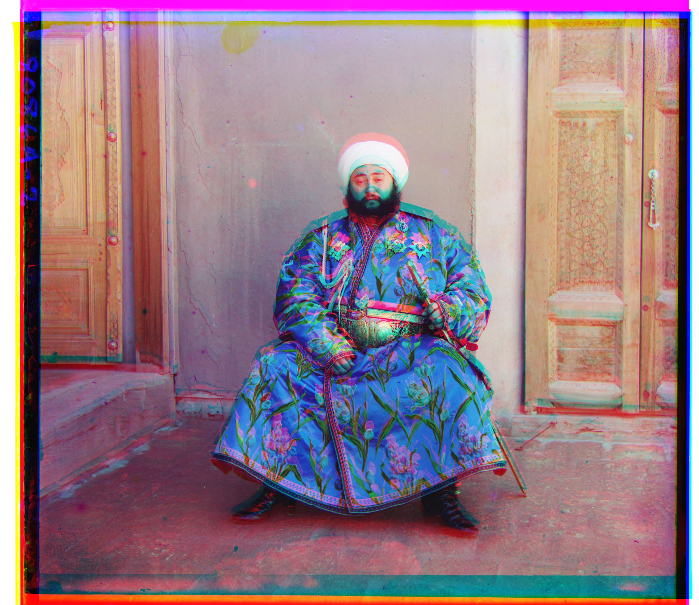
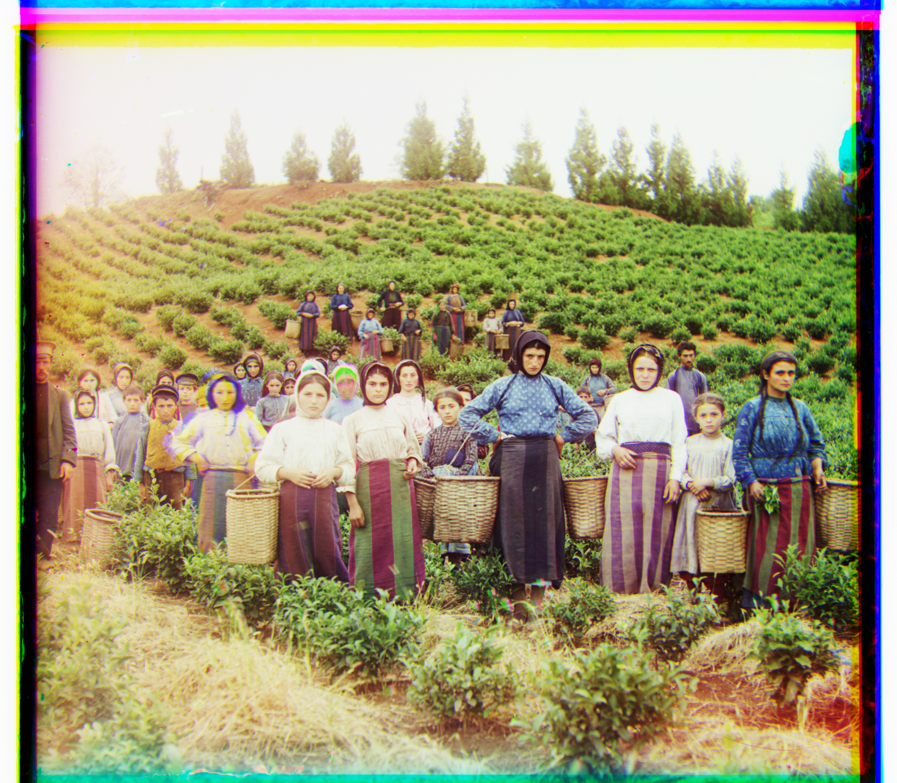
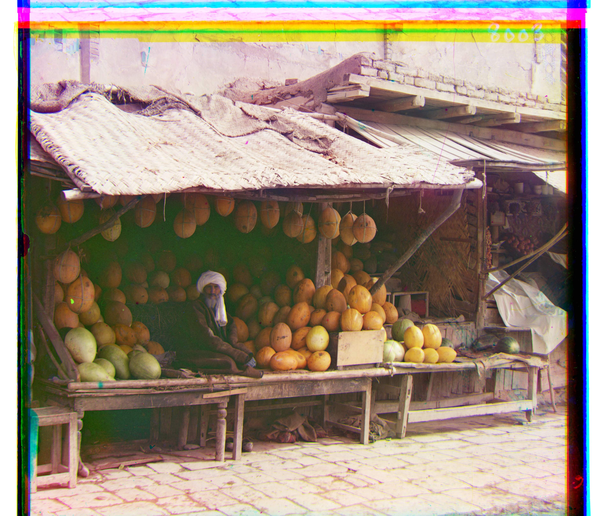
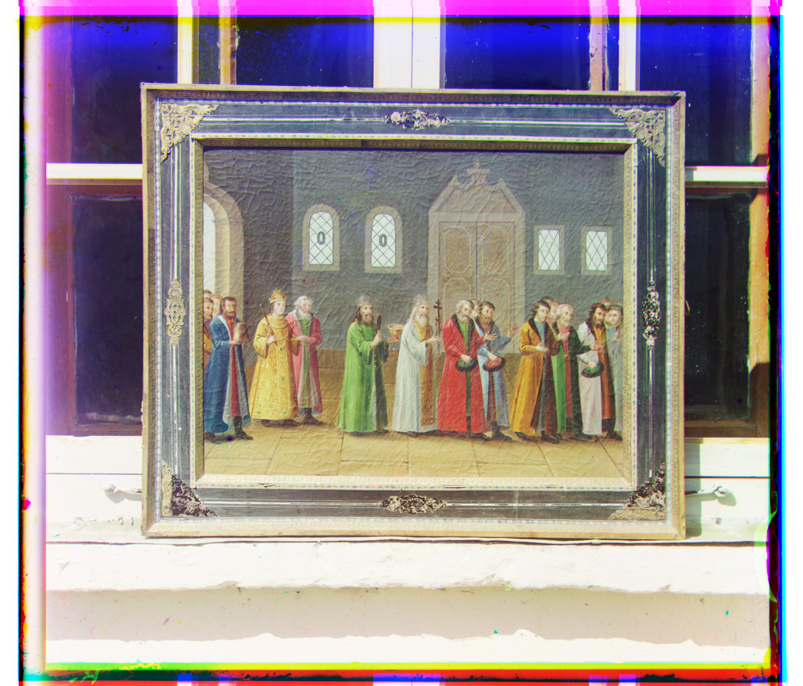
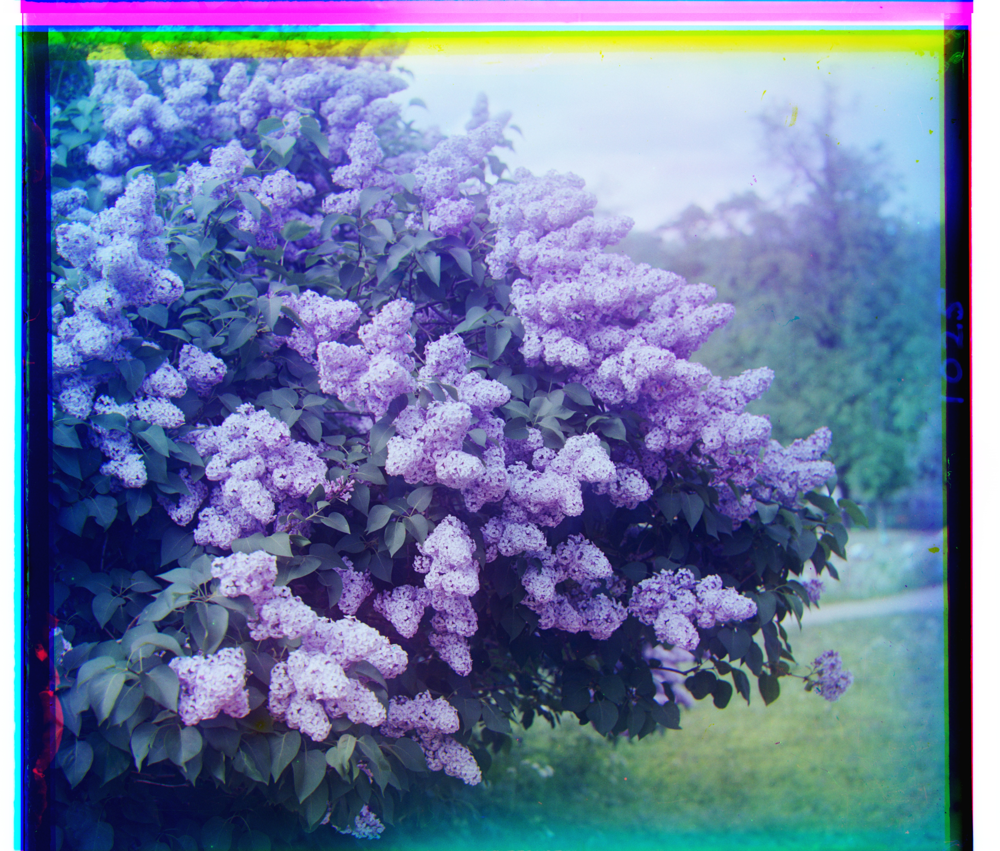
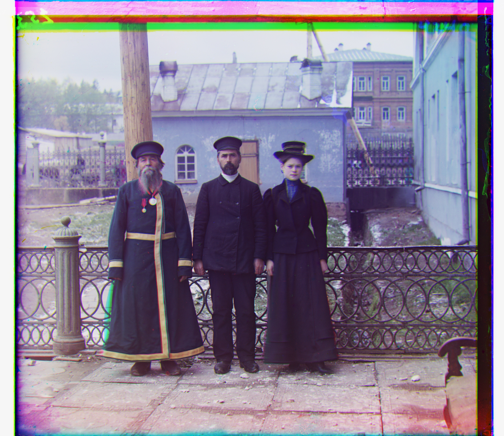
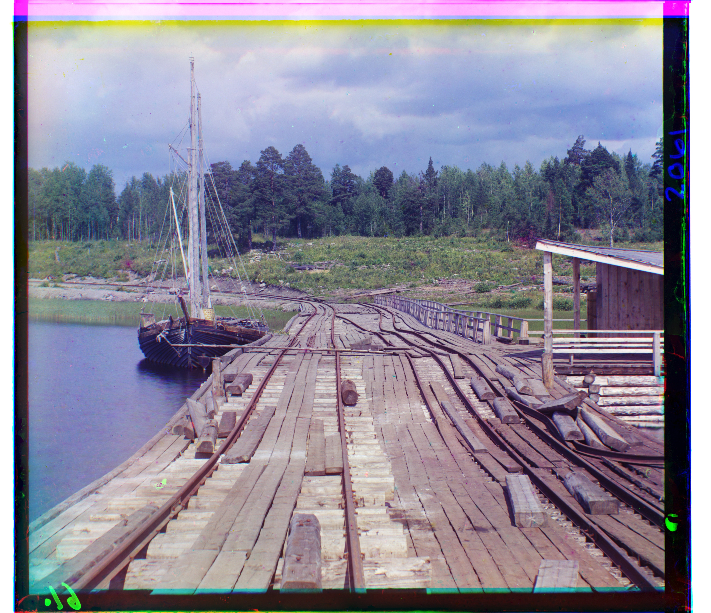
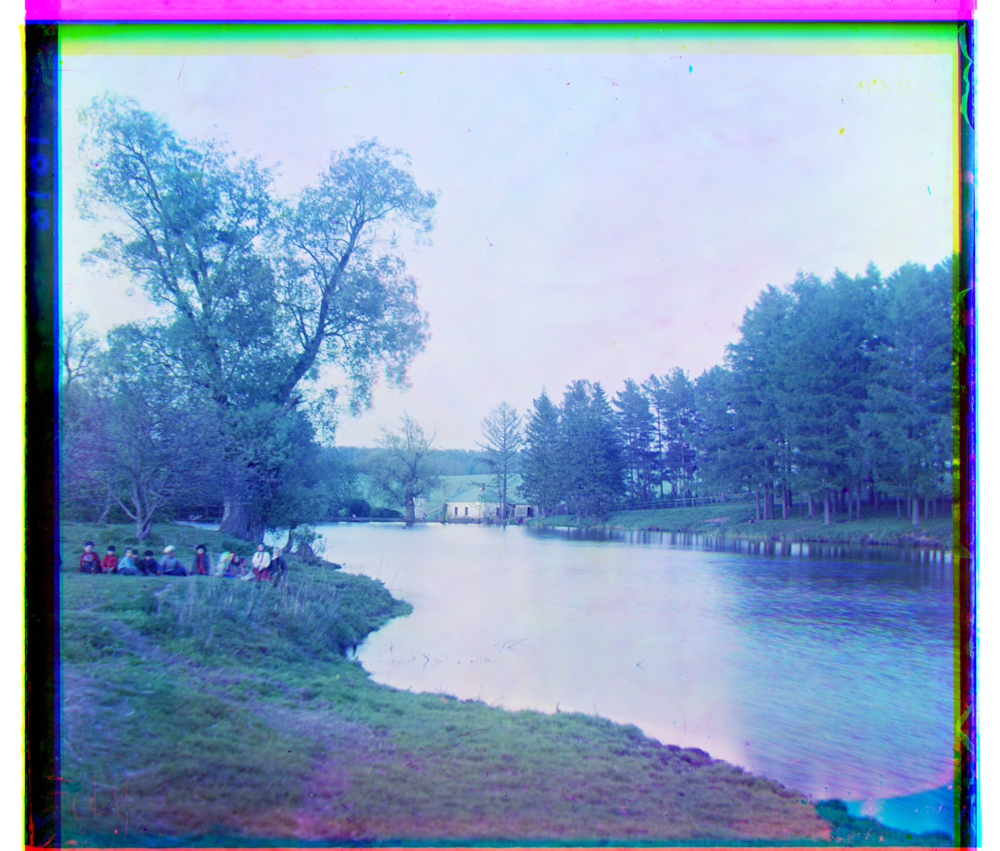
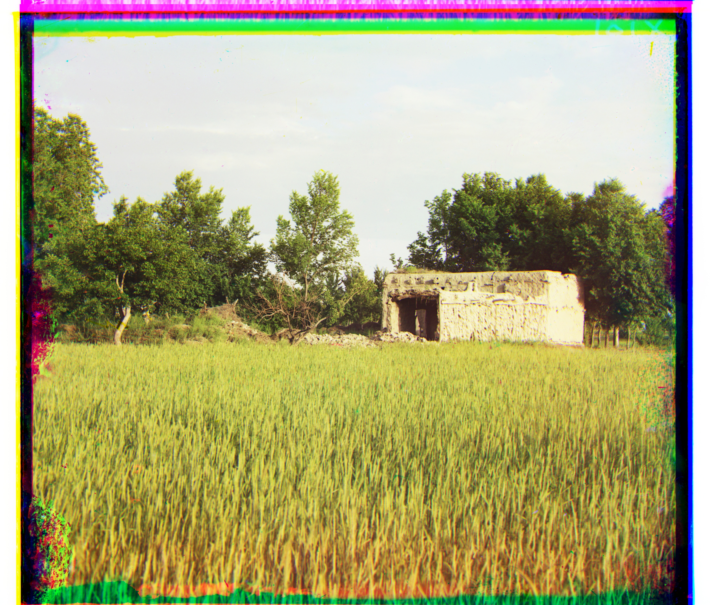
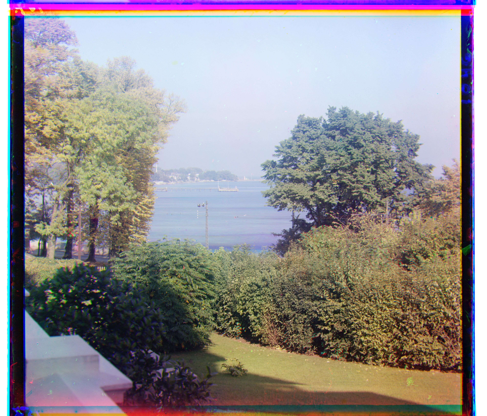

Background
The goal of this project is to take Sergei Mikhailovich Prokudin-Gorskii's digitized plates and automatically produce a clean color image: split each plate into its three channels, then find the (x, y) translation that best aligns the green and red channels to the blue one.
Single-scale alignment
My alignment function exhaustively searches a window of displacements — every integer (x, y) shift within ±30 pixels on both axes. I used L2 norm (Euclidean distance). The score is computed only on the interior of the image. I crop 20% off each side before comparing, because the plate edges contain scanning artifacts, borders, and torn emulsion that would otherwise dominate the metric. Each plate is split into thirds (top-to-bottom order is B, G, R), and the green and red channels are each aligned to the blue channel independently.
I used L2 as the metric throughout. Plain L2 on cropped interiors proved sufficient to align all but one of the plates in my results.
Results on the low-resolution plates
The small .jpg plates are under my pyramid's 500-pixel threshold, so they are handled entirely by this single-scale exhaustive search.

G (x, y)R (x, y)

G (x, y)R (x, y)

G (x, y)R (x, y)
Multi-scale pyramid alignment
The full-resolution .tif scans are several thousand pixels per channel, with displacements far larger than a small search window.
Exhaustive search at full resolution would be prohibitively slow, so I implemented a coarse-to-fine image pyramid.
My implementation is recursive. Each call halves both channels with cv.resize (a factor of 0.5 per axis) and recurses until the image is under 500 pixels tall.
At that coarsest level the true displacement has shrunk by the same factor as the image, so a full exhaustive ±30 search is cheap and guaranteed to contain it.
The offset found there is doubled, applied to the current level with np.roll, and then refined with a small ±3 search. This is repeated back up the pyramid
def pyramid(c,b, search):
h,_ = c.shape
if h<500:
img,downsampled_offset= align(c,b,search)
return img,downsampled_offset
_,downsampled_offset = pyramid(cv.resize(c, None, fx=0.5, fy=0.5),cv.resize(b, None, fx=0.5, fy=0.5),search)
new_c = np.roll(c,downsampled_offset[1]*2,0)
new_c = np.roll(new_c,downsampled_offset[0]*2,1)
img, offset = align(new_c,b,3)
total_offset = (downsampled_offset[0]*2+offset[0],downsampled_offset[1]*2+offset[1])
return img, total_offsetWith this structure, each full-size .tif aligns in about 1 second on my machine (roughly 0.35 s for the small JPEGs).
Results on all fourteen plates
Below are the aligned outputs of the pyramid algorithm on every provided image, with the displacement vectors green and red computed relative to the blue channel, written as (x, y).
G (x, y)R (x, y)

G (x, y)R (x, y)

G (x, y)R (x, y)

G (x, y)R (x, y)
G (x, y)R (x, y)

G (x, y)R (x, y)

G (x, y)R (x, y)
G (x, y)R (x, y)

G (x, y)R (x, y)

G (x, y)R (x, y)

G (x, y)R (x, y)

G (x, y)R (x, y)
G (x, y)R (x, y)

G (x, y)R (x, y)
Where it struggled
The one plate that misaligns is emir. L2 on raw pixel values assumes the channels look similar, but the Emir's brilliant blue robe is bright in the blue channel and dark in the red channel, so pixel intensities disagree even at the true alignment.
Plates of my own choosing
I also ran the algorithm on three additional plates I downloaded from the Library of Congress Prokudin-Gorskii collection.

G (x, y)R (x, y)

G (x, y)R (x, y)

G (x, y)R (x, y)